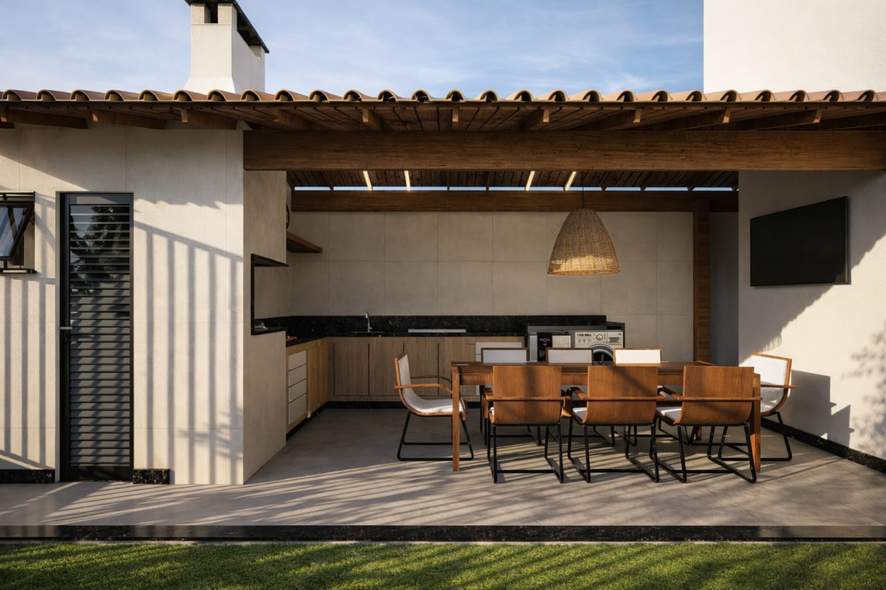
Casa Colina de Laranjeiras
Residencial — Fachada, Serra, ES
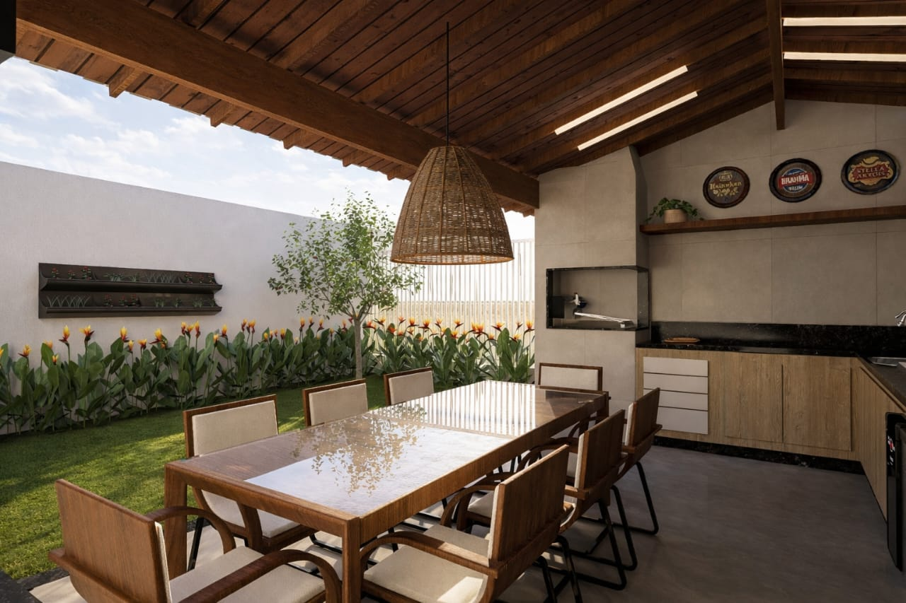
Arquitetura & Paisagem
Manifesto
Projetos

Residencial — Fachada, Serra, ES
Residencial — Jardim, Serra, ES
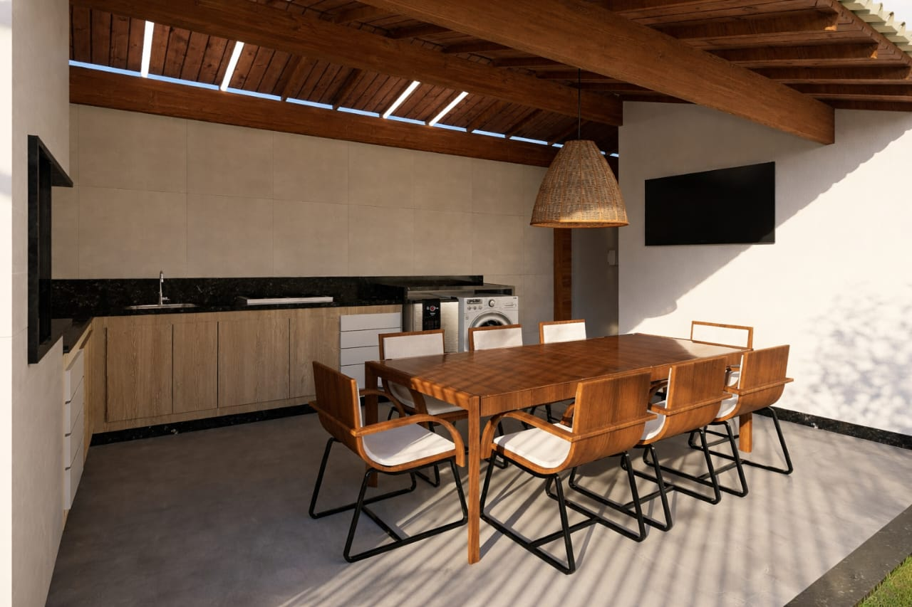
Interiores — Área Gourmet, Serra, ES
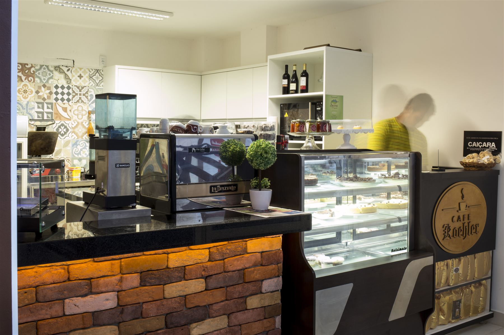
Comercial — Balcão, Domingos Martins, ES
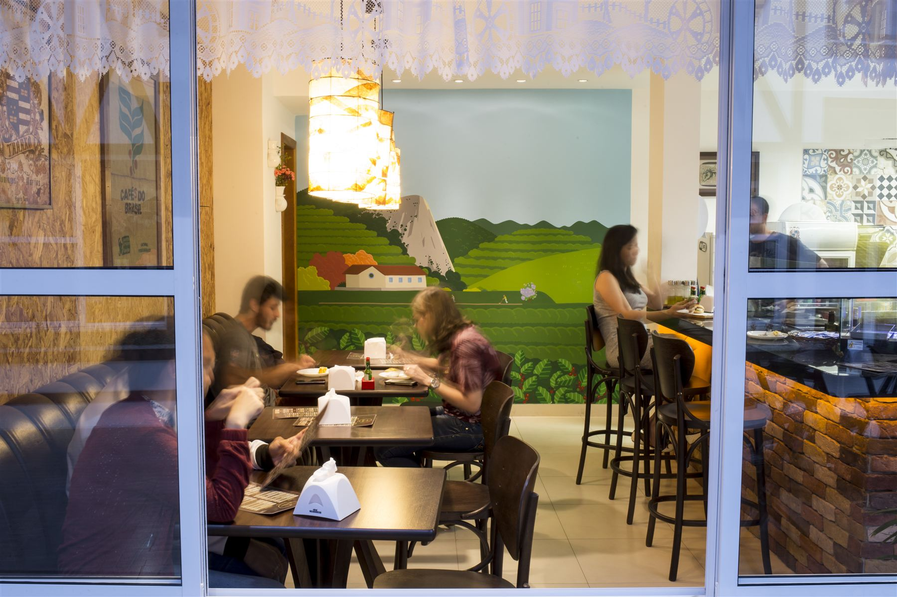
Comercial — Salão, Domingos Martins, ES
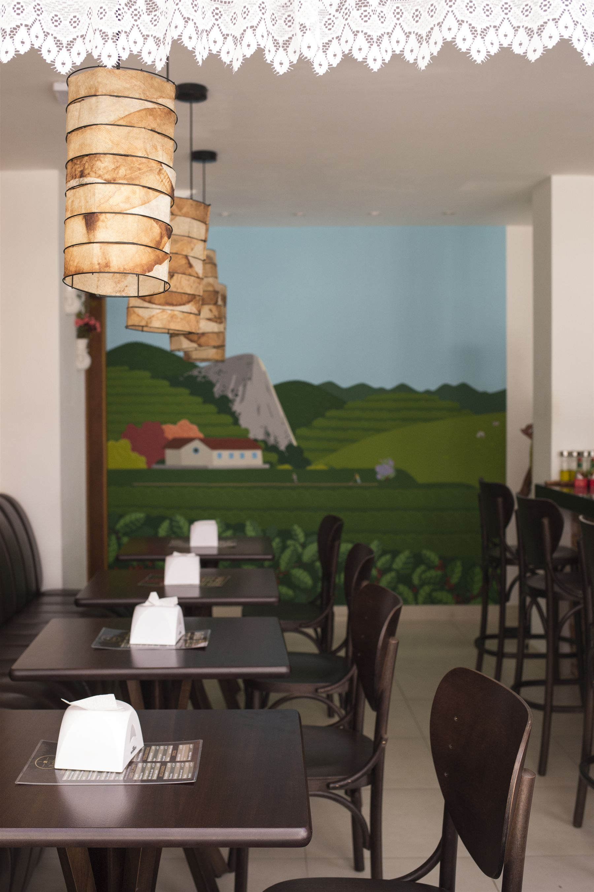
Design — Iluminação autoral, Domingos Martins, ES
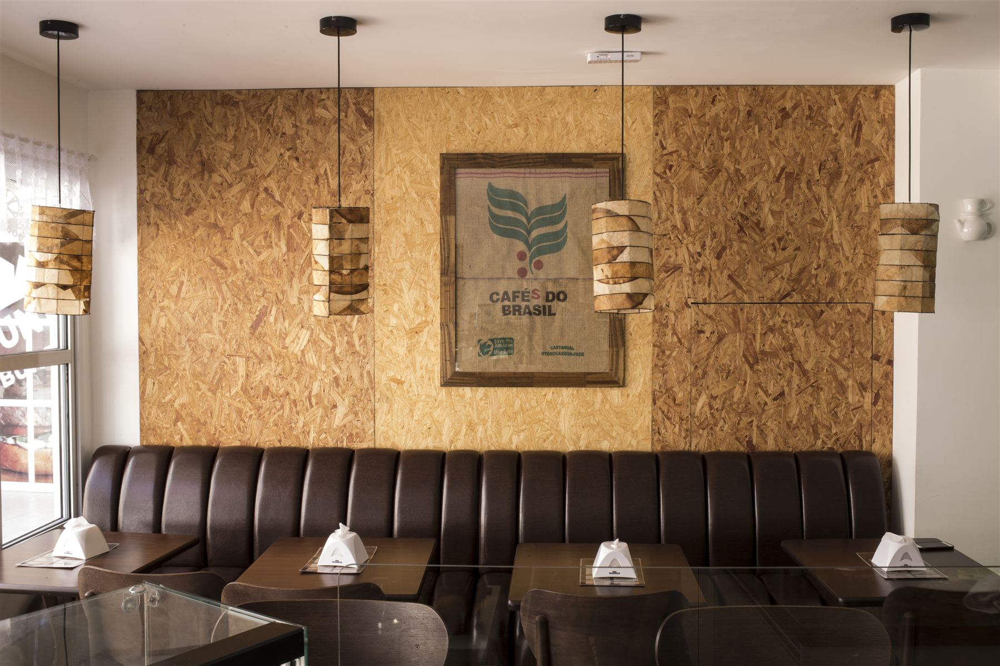
Design — Identidade e materialidade, Domingos Martins, ES
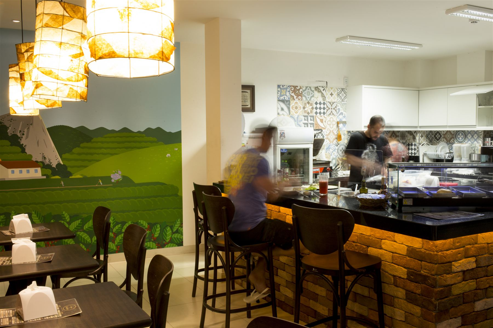
Comercial — Cozinha Show, Domingos Martins, ES
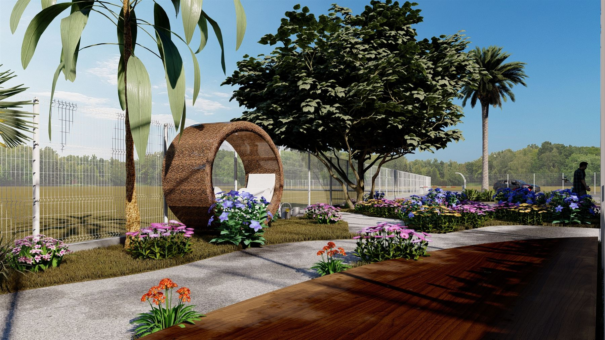
Design — Jardim Sensorial, Serra, ES
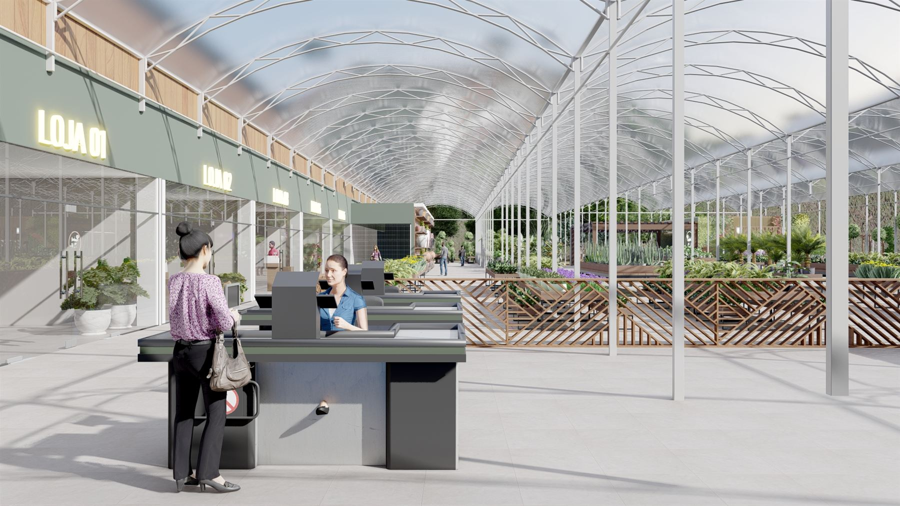
Comercial — Lojas Internas, Serra, ES
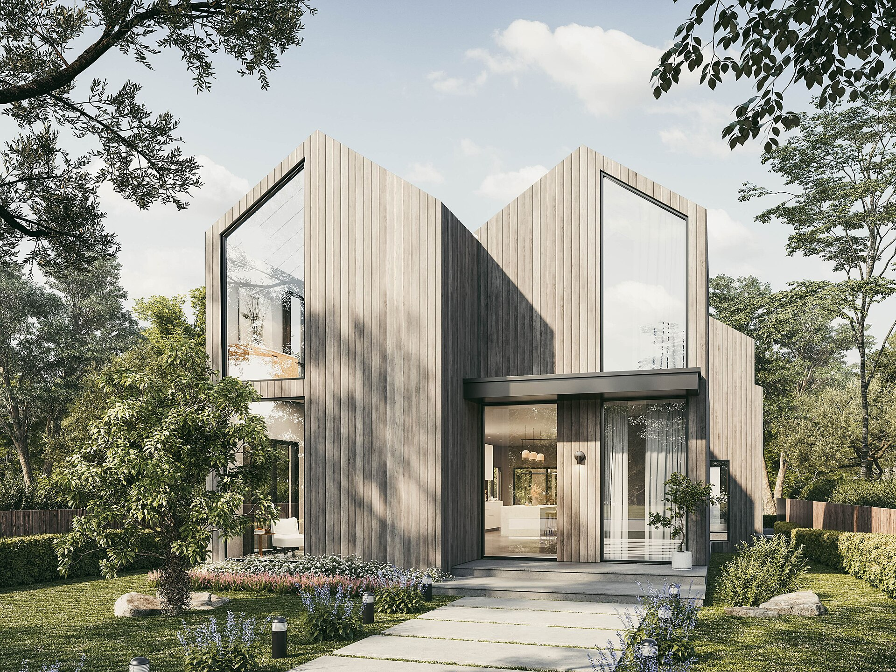
Residencial — Ubatuba, SP
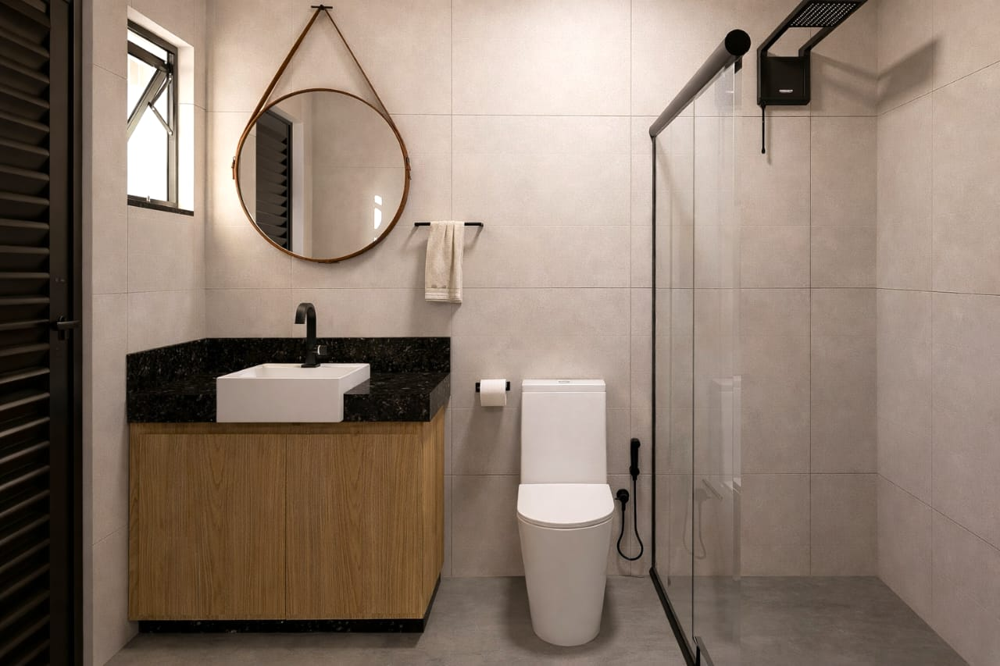
Interiores — Suíte Master, Serra, ES
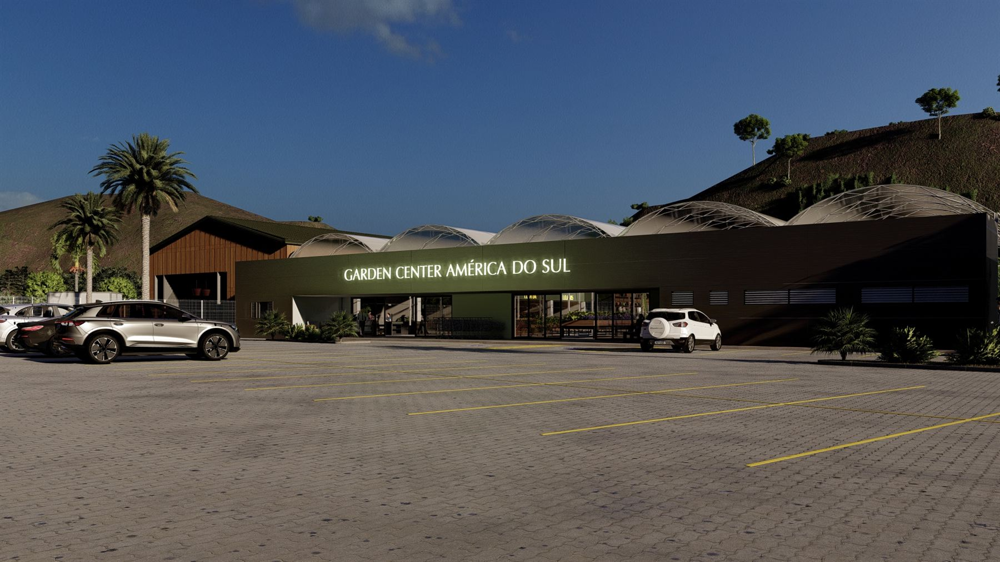
Comercial — Fachada, Serra, ES
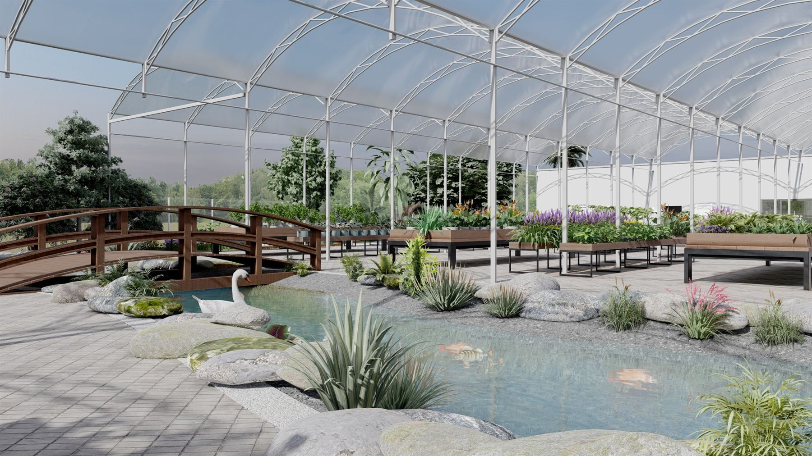
Comercial — Estufa, Serra, ES
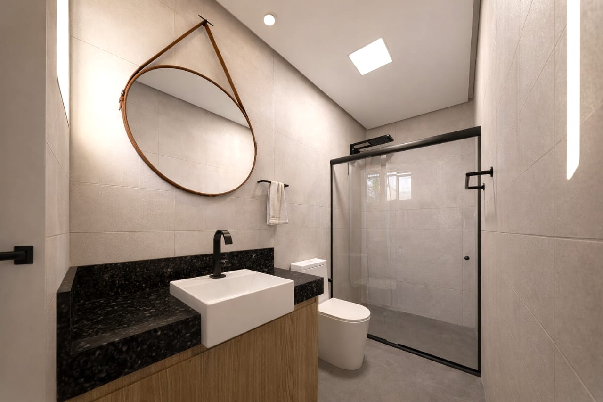
Interiores — Lavabo Social, Serra, ES
Escritório
O Caiçara Studio nasceu em Domingos Martins, no interior serrano do Espírito Santo, com uma convicção simples: a boa arquitetura escuta o lugar antes de desenhar sobre ele. Há mais de doze anos desenvolvemos projetos residenciais, comerciais e de design que unem o repertório do modernismo brasileiro à sabedoria construtiva das comunidades caiçaras — madeira, pedra, palha e concreto aparente convivendo com naturalidade.
Processo
Visitamos o terreno, ouvimos a história da família ou do negócio e mapeamos clima, vento e vegetação antes de qualquer traço.
Estudos volumétricos e de implantação que testam a relação entre cheios, vazios e paisagem em cada orientação solar.
Detalhamento executivo, especificação de materiais regionais e acompanhamento de estrutura, instalações e paisagismo.
Gestão de obra em campo, curadoria de fornecedores locais e entrega acompanhada até o último acabamento.
Contato
Conte um pouco sobre o terreno, o programa e o prazo. Respondemos em até dois dias úteis.